MÃ TÀI LIỆU: HDSD-CEO1983-PRO-V5.0
HỆ SINH THÁI HIỆP HỘI DOANH NHÂN CEO 1983
TÀI LIỆU ĐÀO TẠO & HƯỚNG DẪN SỬ DỤNG CHÍNH THỨC
CẨM NANG VẬN HÀNH CRM HIỆP HỘI &
ỨNG DỤNG DI ĐỘNG CEO 1983
Hội Tụ Doanh Nhân 1983 — Kết Nối Sức Mạnh, Kiến Tạo Tương Lai
Tài liệu cẩm nang nghiệp vụ trực quan toàn diện dành cho Ban Quản Trị, Ban Thư Ký, 6 Ban Chuyên Môn và Toàn thể Hội viên Doanh nhân CLB CEO 1983 (Trực thuộc Hội Doanh Nhân Trẻ Hà Nội — HanoiBA). Hướng dẫn thao tác chi tiết từng bước, tích hợp minh chứng ảnh thực tế cho toàn bộ phân hệ Web CRM và App Di Động.
MỤC LỤC NỘI DUNG ĐÀO TẠO
Bao gồm 16 chương nghiệp vụ tuần tự từ Cổng thông tin, Web CRM đến App Mobile Hội viên
01Cổng Thông Tin Công Khai & Nộp Đơn Đăng Ký Gia Nhập Trực Tuyến
02Đăng Nhập Cổng Quản Trị CRM & Tổng Quan Bàn Làm Việc Dashboard
03Quản Trị Danh Bạ Hội Viên 360° & Quy Trình Thẩm Định Kết Nạp (BTV)
04Đăng Nhập App Di Động CEO 1983 & Đổi Mật Khẩu Lần Đầu
05Trang Chủ Hội Viên, Cập Nhật Nhanh Hồ Sơ & Đếm Chỉ Số B2B
06Thẻ Hội Viên VIP 3D Chìm Logo & Danh Thiếp Số Công Khai (NFC)
07Danh Bạ Hội Viên, Mời Gặp 1-on-1 & Quản Lý Tab "Đã Gửi Kết Nối"
08Hộp Thư Doanh Nhân Messenger #0084FF & Kênh Ban Thư Ký Zalo OA
09Tạo Sự Kiện Gala & Thiết Kế Sơ Đồ Chỗ Ngồi Cinema Seating Map
10Đăng Ký Tham Dự Sự Kiện & Phát Hành Vé Mời Điện Tử E-Ticket QR
11Vận Hành Cổng Soát Vé An Ninh Gate Check-in QR & Quay Số May Mắn
12Gian Hàng B2B Doanh Nhân CEO 1983 & Khớp Lệnh Cơ Hội Cung - Cầu
13Quản Lý Hội Phí Thường Niên VietQR & Đối Soát Gạch Nợ Thủ Công
14Điều Hành Cuộc Họp Ban Chấp Hành & Chống Trùng Phòng Sapphire Hub
15Quản Trị Công Việc Phân Cấp (Tasks 5 View Modes: Kanban Zoom, Org Tree)
16Biểu Quyết Đại Hội Điện Tử, Thư Viện Tài Liệu & Ma Trận Phân Quyền RBAC
CHƯƠNG 01 · TIẾP NHẬN ỨNG VIÊN
Cổng Thông Tin Công Khai & Nộp Đơn Đăng Ký Gia Nhập Trực Tuyến
Giới thiệu tôn chỉ CLB và quy trình nộp hồ sơ xét duyệt hội viên chính thức
Mục tiêu nghiệp vụ: Giúp các doanh nhân sinh năm 1983 tìm hiểu về CLB Doanh Nhân CEO 1983 (HanoiBA), đăng ký gia nhập câu lạc bộ trực tuyến và tự động nhận email xác nhận tiếp nhận hồ sơ.
Vị trí truy cập: Cổng thông tin công khai CLB CEO 1983 ➔ Nút "Đăng Ký Gia Nhập"
1. Quy Trình Thao Tác Chi Tiết (4 Bước)
- Bước 1: Truy cập Cổng thông tin điện tử CLB Doanh Nhân CEO 1983. Xem thông điệp Chủ tịch, các số liệu thống kê hội viên và hoạt động 6 Ban chuyên môn.
- Bước 2: Nhấn nút "Đăng Ký Gia Nhập" màu vàng kim trên thanh điều hướng.
- Bước 3: Điền đầy đủ thông tin vào mẫu đăng ký điện tử:
- Họ và tên ứng viên: Phạm Văn Vũ
- Ngày tháng năm sinh: 09/01/1983 (Bắt buộc xác thực tiêu chuẩn sinh năm 1983)
- Số điện thoại & Email: 0901201983 / vupv090120@gmail.com
- Doanh nghiệp & Mã số thuế: Cty CP Công nghệ VIO CONNECT / 0109831983
- Chức vụ & Ban chuyên môn nguyện vọng sinh hoạt.
- Bước 4: Bấm "Gửi Hồ Sơ Đăng Ký Gia Nhập". Hệ thống tiếp nhận hồ sơ, chuyển trạng thái sang Chờ thẩm định và tự động phát email biên nhận qua hòm thư ứng viên.
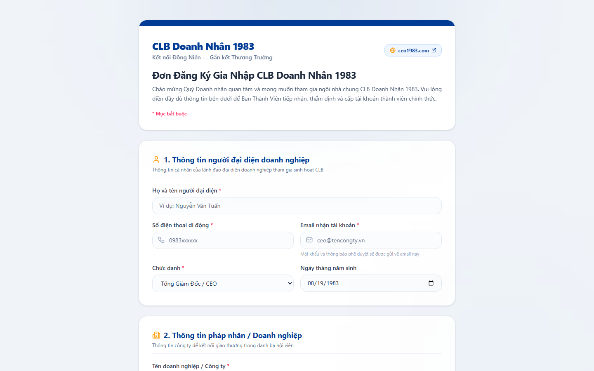
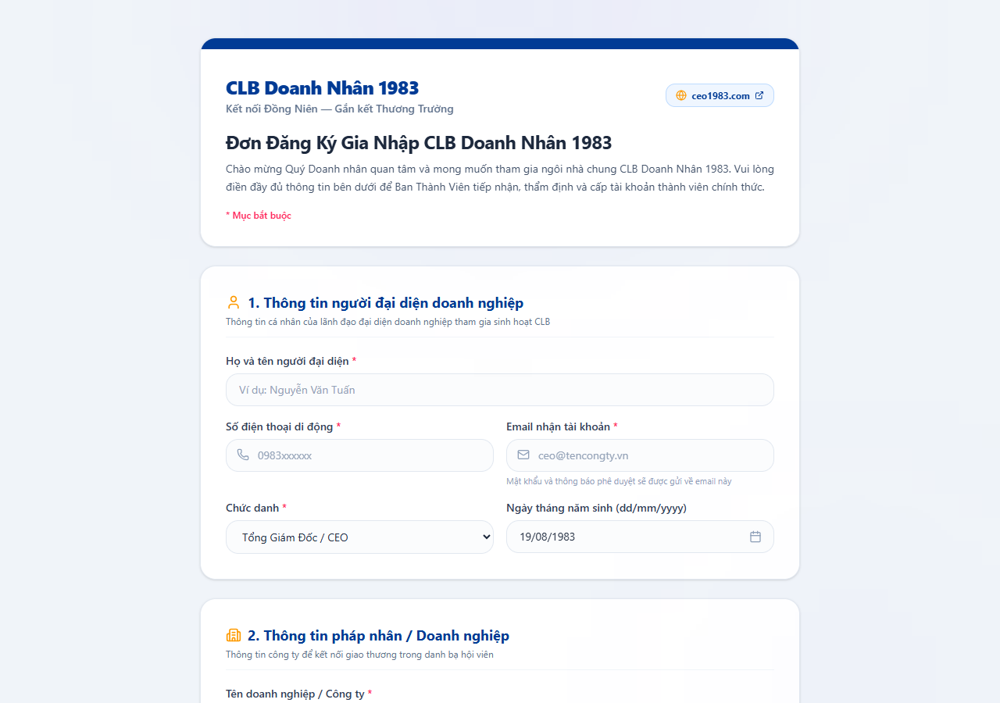
KẾT QUẢ ĐẠT ĐƯỢC: Hồ sơ được ghi nhận vào CSDL trung tâm, máy chủ gửi thư tự động phát thư xác nhận đến email `vupv090120@gmail.com` kèm mã số hồ sơ tra cứu.
CHƯƠNG 02 · CRM QUẢN TRỊ
Đăng Nhập Cổng Quản Trị CRM & Tổng Quan Bàn Làm Việc Dashboard
Truy cập hệ thống điều hành trung tâm dành cho Ban Quản Trị và Ban Thư Ký
Mục tiêu nghiệp vụ: Cung cấp cái nhìn toàn cảnh về tình hình hội viên, quỹ tài chính, tiến độ sự kiện và phễu giao thương B2B của toàn hiệp hội.
Vị trí truy cập: Cổng Quản Trị CRM ➔ Đăng nhập (`/auth`) ➔ Bàn làm việc (`/`)
1. Quy Trình Đăng Nhập & Theo Dõi Chỉ Số
- Bước 1: Mở Cổng Quản Trị Web CRM. Nhập Email quản trị (ví dụ: `admin@connect.vn`) và Mật khẩu bảo mật.
- Bước 2: Nhấn nút "Đăng Nhập Quản Trị". Hệ thống kiểm tra quyền hạn và tạo phiên làm việc bảo mật.
- Bước 3: Tại Bàn làm việc Dashboard, theo dõi 4 khối chỉ số KPI then chốt:
- Tổng số hội viên: Số lượng hội viên chính thức và số hồ sơ đang chờ duyệt.
- Tài chính quỹ: Tổng thu hội phí, số dư quỹ thiện nguyện và chi phí vận hành.
- Sự kiện Gala: Số lượng đại biểu đã đăng ký và tỷ lệ check-in thời gian thực.
- Giao thương B2B: Tổng số sản phẩm đang niêm yết và giá trị thương vụ đã kết nối.
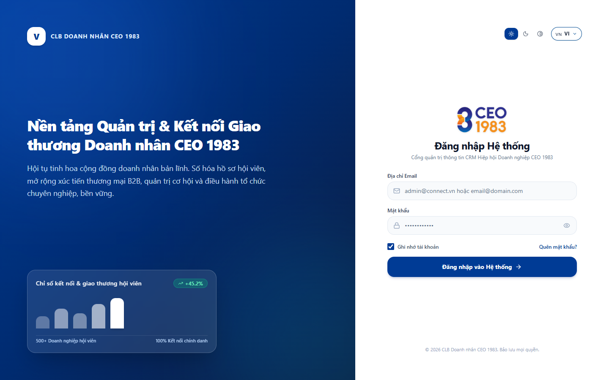
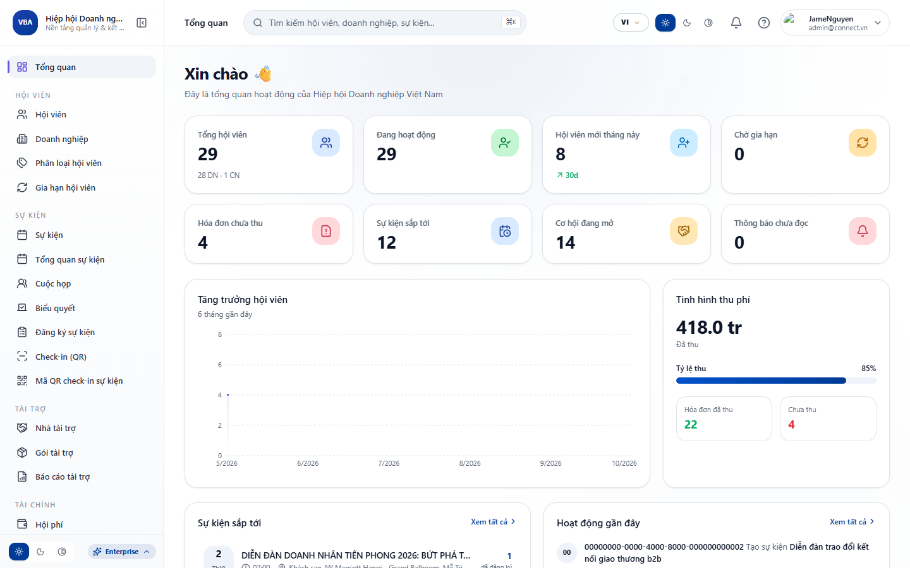
QUY CHUẨN THIẾT KẾ GIAO DIỆN CRM: Toàn bộ giao diện áp dụng chuẩn phong cách Xanh Navy (`#003B95`) và Vàng Champagne Gold, loại bỏ hoàn toàn các nút đen u ám và nút cam chói lóa. Bảng dữ liệu có thanh cuộn ngang cố định Cột STT và Cột Thao tác.
CHƯƠNG 03 · BAN THÀNH VIÊN (BTV)
Quản Trị Danh Bạ Hội Viên 360° & Quy Trình Thẩm Định Kết Nạp
Thẩm quyền độc quyền của Ban Thành Viên (BTV) trong việc kiểm duyệt và cấp mã hội viên
Mục tiêu nghiệp vụ: Đảm bảo 100% hồ sơ kết nạp được thẩm định chính xác về mặt pháp lý doanh nghiệp và tiêu chuẩn sinh năm 1983; tự động cấp Mã hội viên định danh (`CEO-83xxx`) và gửi email thông báo mật khẩu khởi tạo.
Vị trí truy cập: Cổng Quản Trị CRM ➔ Menu "Hội Viên" ➔ Mục "Danh sách hội viên" (`/members`)
1. Quy Trình Thẩm Định Hồ Sơ Mới (4 Bước)
- Bước 1: Trưởng Ban Thành Viên (`ceo.thanhvien@ceo1983.com`) đăng nhập CRM, chọn tab "Chờ Thẩm Định".
- Bước 2: Nhấp vào tên ứng viên Phạm Văn Vũ để mở ngăn kéo (Drawer) thẩm định chi tiết 360 độ: xem mã số thuế, chức vụ, hồ sơ công ty và nguyện vọng chuyên ban.
- Bước 3: Nhấn nút "Phê Duyệt Kết Nạp" màu xanh Navy.
- Bước 4: Hệ thống tự động:
- Cấp Mã định danh độc bản: CEO-83007.
- Kích hoạt tài khoản và băm mật khẩu ngẫu nhiên an toàn.
- Máy chủ SMTP phát thư điện tử chào mừng chính thức kèm thông tin đăng nhập đến hòm thư `vupv090120@gmail.com`.
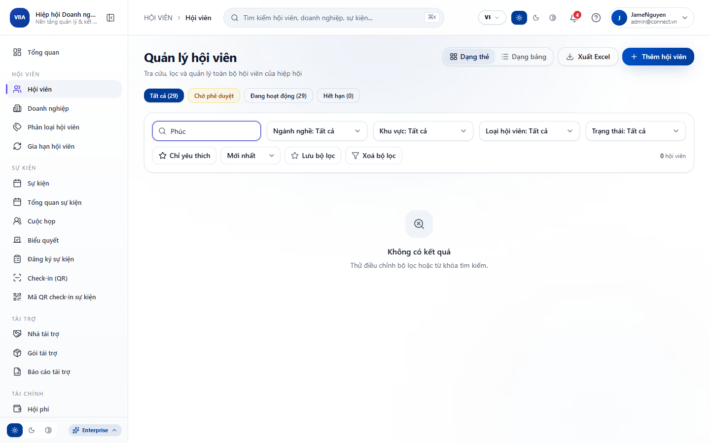
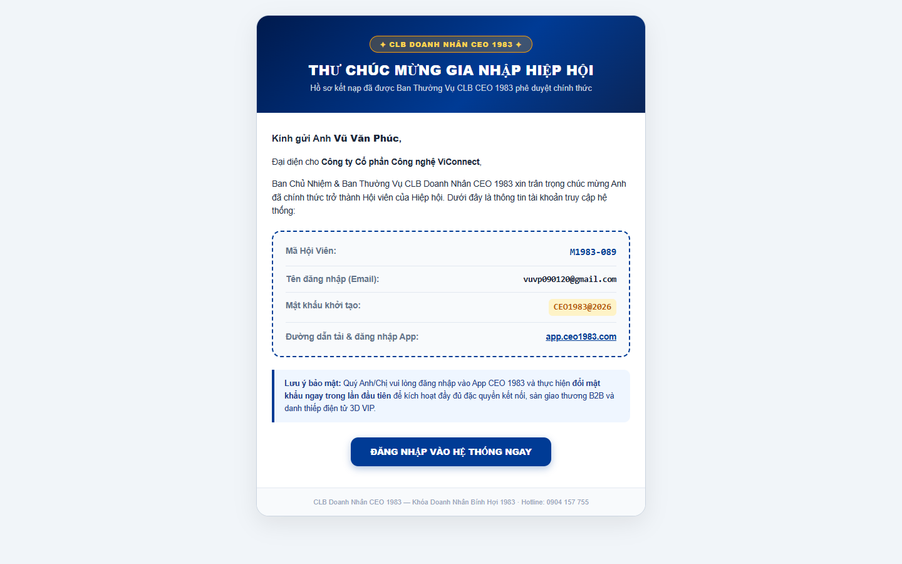
RÀNG BUỘC PHÂN QUYỀN TUYỆT ĐỐI: Ban Thư Ký (BTK) KHÔNG có thẩm quyền bấm duyệt kết nạp hội viên. Nếu tài khoản thư ký cố tình thao tác, hệ thống sẽ chặn và hiển thị thông báo phân quyền an toàn.
CHƯƠNG 04 · APP DI ĐỘNG CEO 1983
Đăng Nhập App Di Động CEO 1983 & Đổi Mật Khẩu Lần Đầu
Trải nghiệm ứng dụng di động dành cho doanh nhân hội viên chính thức
Mục tiêu nghiệp vụ: Hướng dẫn hội viên đăng nhập ứng dụng trên điện thoại thông minh bằng mật khẩu tạm thời được cấp và thiết lập mật khẩu cá nhân mới để kích hoạt bảo mật.
Vị trí truy cập: Mở App CEO 1983 trên điện thoại ➔ Màn hình đăng nhập (`/association/login`)
1. Quy Trình Thao Tác Trên Điện Thoại
- Bước 1: Mở ứng dụng CEO 1983. Nhập Số điện thoại/Email và Mật khẩu khởi tạo được gửi trong email chào mừng.
- Bước 2: Nhấn nút "Đăng Nhập".
- Bước 3: Màn hình yêu cầu "Đổi Mật Khẩu Lần Đầu" tự động xuất hiện. Nhập mật khẩu cũ và thiết lập mật khẩu mới (tối thiểu 8 ký tự).
- Bước 4: Bấm "Kích Hoạt Tài Khoản" để hoàn tất và truy cập vào không gian làm việc hội viên.
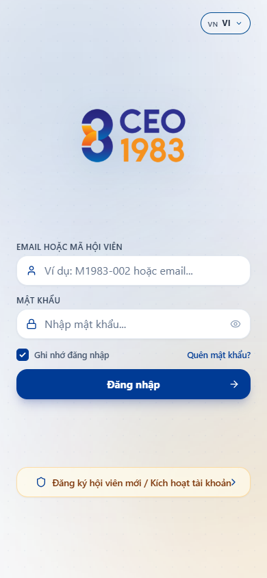
Hình 4.1: Màn hình Đăng nhập App Di Động CEO 1983
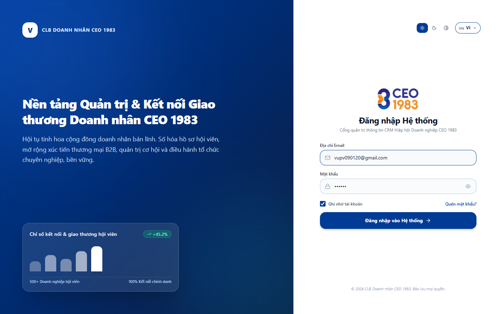
Hình 4.2: Nhập thông tin đăng nhập chính danh
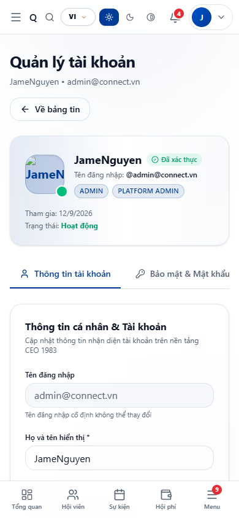
Hình 4.3: Thiết lập mật khẩu mới an toàn
CHƯƠNG 05 · APP DI ĐỘNG CEO 1983
Trang Chủ Hội Viên, Cập Nhật Nhanh Hồ Sơ & Đếm Chỉ Số B2B
Trung tâm điều hành cá nhân của doanh nhân trên ứng dụng di động
Mục tiêu nghiệp vụ: Giúp hội viên nắm bắt nhanh các tin tức hiệp hội, theo dõi lịch sự kiện sắp diễn ra, đếm cơ hội kinh doanh đang mở và chỉnh sửa thông tin đại diện theo phong cách Facebook tức thì.
Vị trí truy cập: Tab "Trang Chủ" trên thanh điều hướng dưới đáy ứng dụng (`/association`)
1. Các Thành Phần Trọng Tâm Tại Trang Chủ
- Header Nhận Diện: Hiển thị Logo CEO 1983 sắc nét, chuông thông báo cá nhân hóa và nút "Liên Hệ Trực Tiếp" mở bảng thông tin liên lạc Ban Thư Ký.
- Thẻ Hội Viên Tóm Tắt: Hiển thị Họ tên, Mã hội viên (ví dụ: `CEO-83007`), chức vụ doanh nghiệp và nút "Chỉnh sửa nhanh". Bấm vào mở modal chỉnh sửa ảnh đại diện, ảnh bìa, số điện thoại và logo công ty tức thì.
- Huy Hiệu Chỉ Số B2B: Các badge thống kê cơ hội kinh doanh đang mở và sản phẩm đang bán được đóng gói gọn gàng bên trong thẻ, không tràn viền.
- Lối Tắt Tác Vụ Nhanh (Quick Pills): Nút Quét mã QR check-in sự kiện, Đóng hội phí VietQR, Mạng lưới đối tác và Sàn B2B.
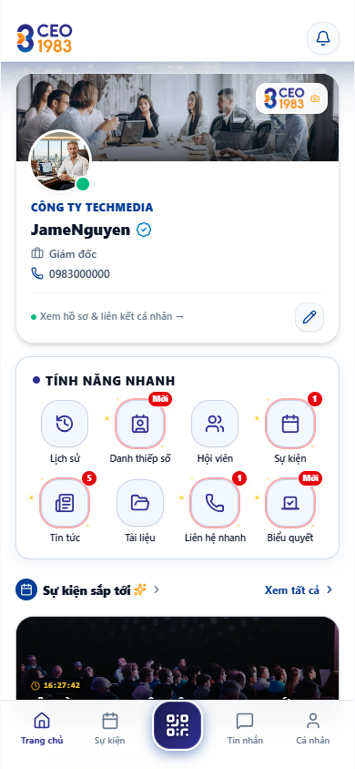
Hình 5.1: Trang chủ Hội viên Doanh nhân CEO 1983
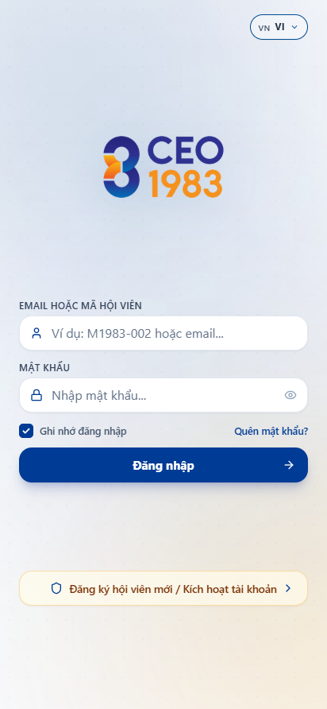
Hình 5.2: Bảng chỉnh sửa nhanh ảnh đại diện & logo
CHƯƠNG 06 · ĐỊNH DANH SỐ VIP
Thẻ Hội Viên VIP 3D Chìm Logo & Danh Thiếp Số Công Khai (NFC)
Định danh doanh nhân cao cấp với công nghệ chạm NFC 1 giây và mã QR cá nhân
Mục tiêu nghiệp vụ: Tạo dựng niềm tự hào hội viên qua thẻ điện tử 3D sang trọng, hỗ trợ kết nối đối tác nhanh chóng qua công nghệ chạm thẻ NFC hoặc quét mã QR danh thiếp công khai.
Vị trí truy cập: Tab "Thẻ VIP" (`/association/card`) hoặc đường dẫn công khai `/card/:code`
1. Hướng Dẫn Sử Dụng Thẻ Điện Tử & NFC
- Xem Thẻ 3D: Mở tab Thẻ VIP. Thẻ được thiết kế theo tỷ lệ thẻ ngân hàng chuẩn quốc tế, nền Xanh Navy phối Vàng Amber Gold, chìm Logo doanh nghiệp với hiệu ứng Screen Blend tinh tế.
- Lật Mặt Sau Thẻ: Chạm nhẹ vào thẻ để lật xem mặt sau chứa Điều lệ hội viên, thời hạn thẻ và mã QR quét định danh.
- Chạm Thẻ NFC: Khi gặp đối tác tại hội thảo, đưa mặt thẻ vật lý chạm vào lưng điện thoại đối tác (hỗ trợ cả iPhone và Android), điện thoại đối tác tự động mở trang Danh thiếp số công khai.
- Lưu Danh Bạ Tự Động: Đối tác chỉ cần bấm nút "Lưu Danh Bạ" để lưu đầy đủ Họ tên, Số điện thoại, Email, Chức vụ và Địa chỉ công ty vào danh bạ điện thoại trong 1 giây.
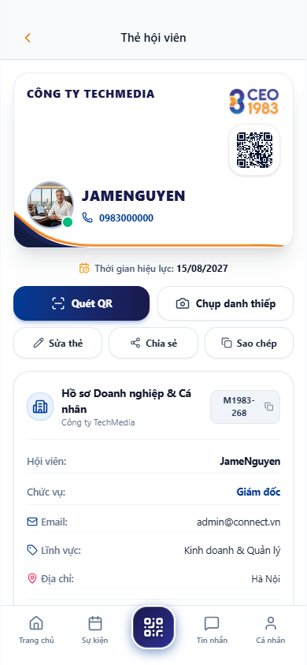
Hình 6.1: Thẻ Hội viên VIP 3D chìm logo doanh nghiệp
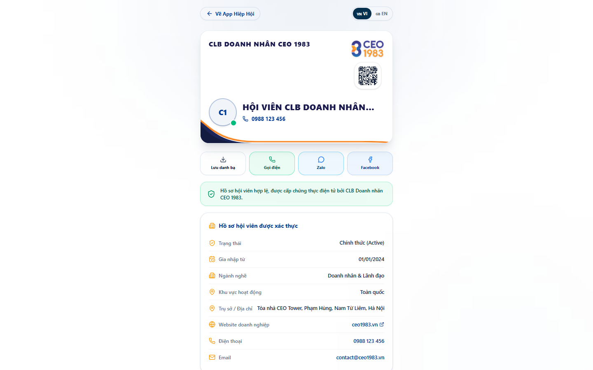
Hình 6.2: Danh thiếp số công khai quét qua mã QR / NFC
CHƯƠNG 07 · KẾT NỐI B2B
Danh Bạ Hội Viên, Mời Gặp 1-on-1 & Quản Lý Tab "Đã Gửi Kết Nối"
Mạng lưới hơn 500+ lãnh đạo doanh nghiệp và công cụ điều phối cuộc hẹn giao thương
Mục tiêu nghiệp vụ: Giúp hội viên dễ dàng tra cứu đối tác theo ngành nghề, gửi lời mời giao thương 1-on-1 và theo dõi trạng thái lời mời tại tab "Đã gửi kết nối".
Vị trí truy cập: Tab "Hội Viên" trên App Mobile (`/association/members`)
1. Thao Tác Gửi Lời Mời & Theo Dõi Kết Nối
- Tìm Kiếm & Lọc: Sử dụng thanh tìm kiếm nhanh theo tên CEO hoặc chọn bộ lọc ngành nghề (Công nghệ, Bất động sản, Xây dựng, Tài chính...).
- Gửi Lời Mời Kết Nối: Bấm biểu tượng "Bắt Tay (Handshake)" tại thẻ hội viên. Ngăn kéo B2B Connect mở ra: chọn mục đích hợp tác, đính kèm cơ hội kinh doanh và bấm "Gửi Đề Xuất".
- Quản Lý Tab "Đã Gửi Kết Nối": Mở tab "Đã gửi kết nối" để theo dõi 3 trạng thái:
- Đang chờ: Đối tác chưa phản hồi. Có sẵn nút "Hủy" để rút lại lời mời nếu bấm nhầm.
- Đã chấp nhận: Đối tác đã đồng ý. Có sẵn nút "Nhắn tin" để mở cuộc trò chuyện ngay.
- Đã từ chối: Hiển thị rõ ràng nếu đối tác chưa sắp xếp được lịch.
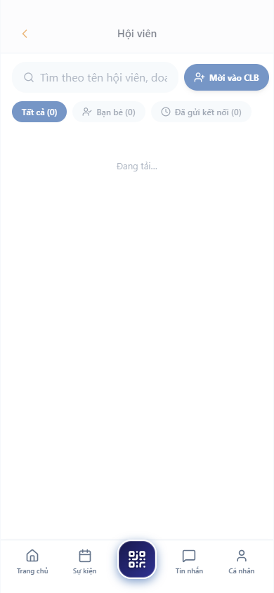
Hình 7.1: Danh bạ Hội viên CLB CEO 1983
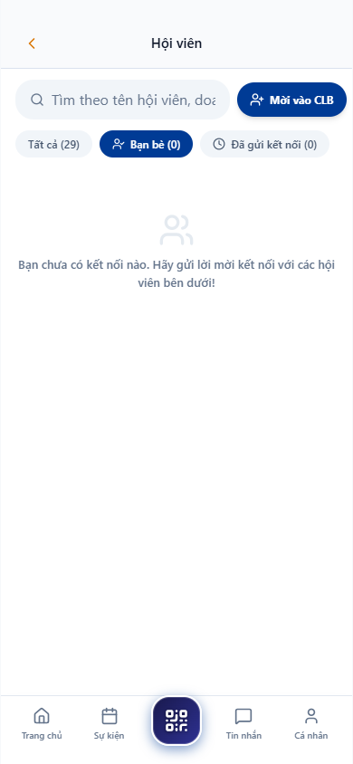
Hình 7.2: Hồ sơ chi tiết đối tác và đề xuất kết nối B2B
CHƯƠNG 08 · TRÒ CHUYỆN REALTIME
Hộp Thư Doanh Nhân Messenger #0084FF & Kênh Ban Thư Ký Zalo OA
Không gian trao đổi bảo mật thời gian thực, thẻ mời họp B2B và kênh ghim chính thức
Mục tiêu nghiệp vụ: Tạo kênh liên lạc kinh doanh tập trung giữa các hội viên và nhận các thông báo điều hành chính thức từ Ban Thư Ký với định dạng thẻ giao dịch Zalo OA chuyên nghiệp.
Vị trí truy cập: Tab "Tin Nhắn" trên App Mobile (`/association/messages`)
1. Tính Năng Nổi Bật Trên Hộp Thư Doanh Nhân
- Kênh Ghim Số 1 - Ban Thư Ký CLB: Luôn nằm cố định trên cùng với huy hiệu xác thực. Nhận thông báo đóng phí niên liễm, giấy triệu tập đại hội và thông báo khẩn cấp.
- Thẻ Giao Dịch Zalo OA: Thông báo hội phí hiển thị số tiền in đậm, thông tin tài khoản MB Bank và nút "Thanh Toán VietQR" trực tiếp trong khung chat.
- Thẻ Mời Họp B2B Tương Tác: Khi gửi lời mời gặp mặt, tin nhắn hiển thị dưới dạng card tương tác với thời gian, địa điểm và nút "Đồng Ý / Từ Chối" trực tiếp.
- Tính Năng An Toàn: Hỗ trợ thu hồi tin nhắn, gửi ảnh độ nét cao và nhật ký cuộc gọi trao đổi.
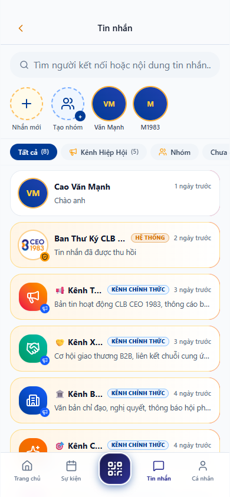
Hình 8.1: Hộp thư Messenger & Kênh Ban Thư Ký ghim trên cùng

Hình 8.2: Giao diện trò chuyện thời gian thực chuẩn #0084FF
CHƯƠNG 09 · QUẢN LÝ SỰ KIỆN CRM
Tạo Sự Kiện Gala & Thiết Kế Sơ Đồ Chỗ Ngồi Cinema Seating Map
Công cụ điều phối đại hội quy mô lớn và bố trí bàn tiệc VIP trực quan
Mục tiêu nghiệp vụ: Khởi tạo sự kiện đa bước, cấu hình vé có phí/miễn phí và sắp xếp vị trí chỗ ngồi đại biểu chính xác theo sơ đồ bàn tiệc, triệt tiêu tình trạng tranh chấp chỗ ngồi.
Vị trí truy cập: Cổng Quản Trị CRM ➔ Menu "Sự Kiện" (`/events`) ➔ Nút "Tạo Sự Kiện" & Tab "Seating Map"
1. Quy Trình Khởi Tạo & Thiết Kế Sơ Đồ Chỗ Ngồi
- Bước 1: Bấm nút "Tạo Sự Kiện Mới" trên CRM. Nhập tên sự kiện (ví dụ: Đêm Gala Hội Ngộ Doanh Nhân CEO 1983), thời gian, địa điểm khách sạn và tải banner 16:9.
- Bước 2: Thiết lập các loại vé: Vé VIP Dạ Tiệc (1.500.000 VNĐ) và Vé Tiêu Chuẩn Hội Viên (0 VNĐ).
- Bước 3: Mở công cụ Cinema Seating Map:
- Kéo thả bố trí các bàn tròn VIP 10 chỗ (Bàn VIP 01, Bàn VIP 02...) gần sân khấu.
- Bố trí các dãy ghế đại biểu danh dự và dãy hội viên.
- Gán trực tiếp từng hội viên vào vị trí ghế cụ thể.
- Bước 4: Bấm "Lưu & Kích Hoạt Sự Kiện". Hệ thống tự động đồng bộ số bàn vào vé E-Ticket của từng đại biểu.
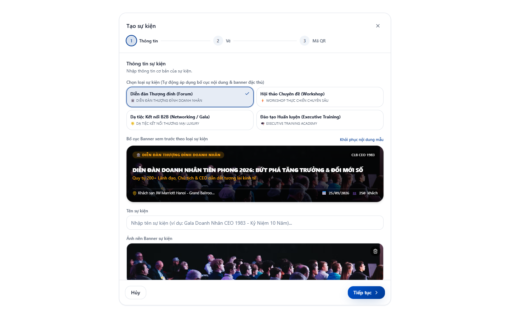
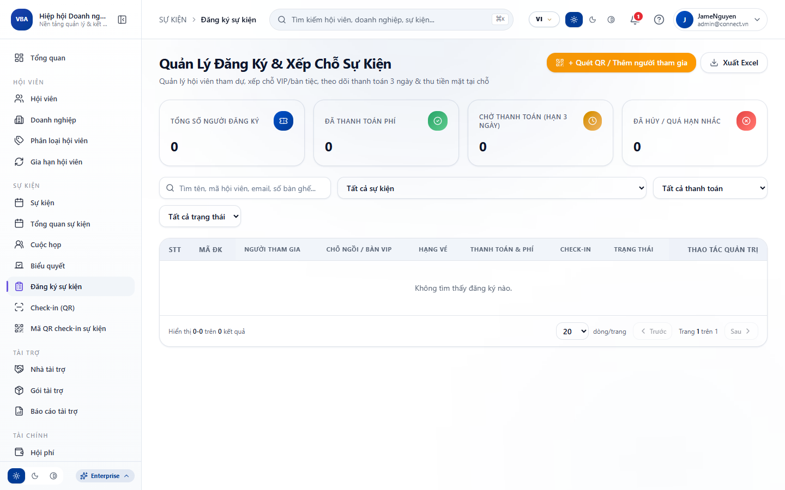
CHƯƠNG 10 · VÉ ĐIỆN TỬ APP
Đăng Ký Tham Dự Sự Kiện & Phát Hành Vé Mời Điện Tử E-Ticket QR
Thao tác giữ chỗ và nhận vé điện tử an toàn ngay trên điện thoại hội viên
Mục tiêu nghiệp vụ: Giúp hội viên đăng ký tham gia các chương trình của hiệp hội và nhận vé E-Ticket chứa mã QR mã hóa cùng số bàn tiệc đã được xếp sẵn.
Vị trí truy cập: Tab "Sự Kiện" trên App Mobile (`/association/events`)
1. Quy Trình Đăng Ký & Nhận Vé Mời E-Ticket
- Bước 1: Mở mục Sự Kiện trên App Mobile, chọn sự kiện Gala mong muốn tham gia.
- Bước 2: Xem chi tiết nội dung chương trình, diễn giả và thời gian biểu.
- Bước 3: Bấm "Đăng Ký Tham Dự". Nếu là vé có phí, hệ thống hiển thị mã VietQR chuyển khoản nhanh; nếu là vé đặc quyền hội viên, hệ thống xác nhận ngay lập tức.
- Bước 4: Vé mời điện tử E-Ticket QR xuất hiện trên màn hình: hiển thị Mã vé, Mã QR chống giả mạo, Họ tên đại biểu, Tên doanh nghiệp và Vị trí Bàn VIP.
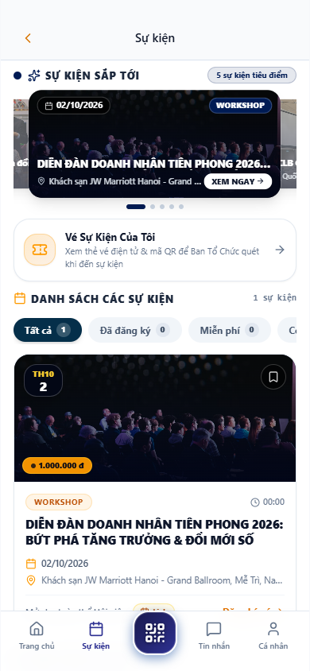
Hình 10.1: Danh sách sự kiện hoạt động CLB CEO 1983
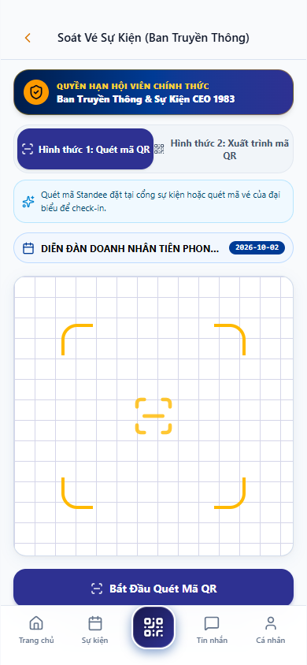
Hình 10.2: Vé mời điện tử E-Ticket QR Pass kèm số bàn VIP
CHƯƠNG 11 · AN NINH & QUAY SỐ
Vận Hành Cổng Soát Vé An Ninh Gate Check-in QR & Quay Số May Mắn
Nghiệp vụ đón tiếp đại biểu tốc độ cao & quay thưởng đại hội minh bạch
Mục tiêu nghiệp vụ: Ban Truyền Thông và Lễ tân soát vé đại biểu < 0.2s tại cổng Gala, tự động nhận diện vé hợp lệ/vé trùng và nạp danh sách đại biểu tham dự thực tế vào Vòng quay số may mắn.
Vị trí truy cập: Cổng Quản Trị CRM ➔ Mục "Soát Vé Sự Kiện" (`/checkin`) & Tab "Lucky Draw"
1. Quy Trình Soát Vé Tại Cửa Đón Tiếp
- Bước 1: Mở màn hình Soát vé an ninh Gate Check-in (`/checkin`) trên máy tính bảng hoặc máy tính có camera tại bàn đón tiếp.
- Bước 2: Hướng camera vào mã QR E-Ticket trên điện thoại của đại biểu.
- Bước 3: Xử lý kết quả phản hồi tức thời:
- Màn hình Xanh Lục (Hợp lệ): Phản hồi trong 0.2s, hiển thị Họ tên đại biểu, Tên doanh nghiệp và Vị trí Bàn tiệc. Lễ tân hướng dẫn đại biểu vào đúng bàn.
- Màn hình Đỏ Rực (Cảnh báo vé trùng): Phát âm thanh cảnh báo, hiển thị: "CẢNH BÁO: Vé này đã được check-in lúc [HH:mm:ss]!" để ngăn chặn gian lận.
- Bước 4: Vòng quay số may mắn Lucky Draw tự động đồng bộ danh sách những người ĐÃ CHECK-IN THỰC TẾ tại cửa để quay thưởng trên màn hình lớn sân khấu.
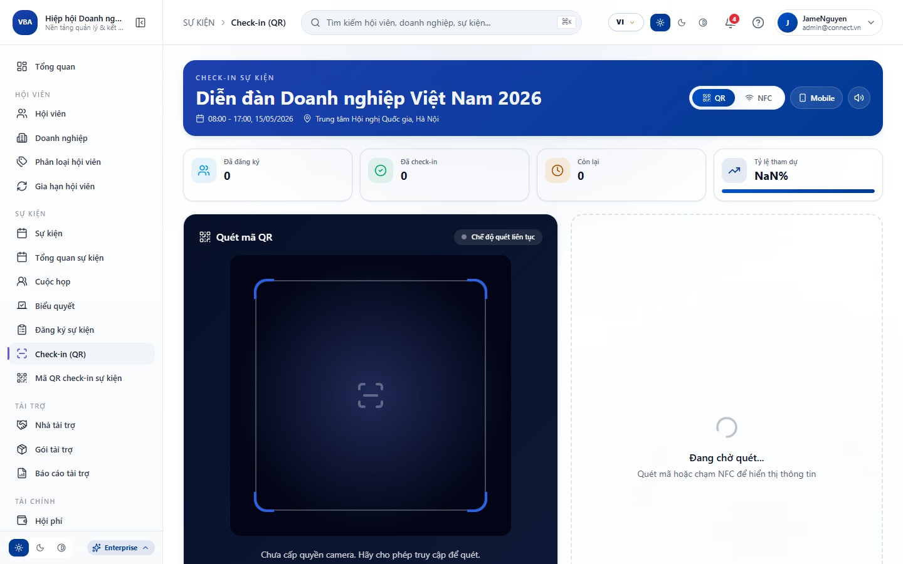
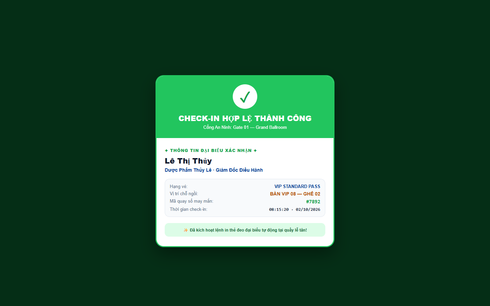
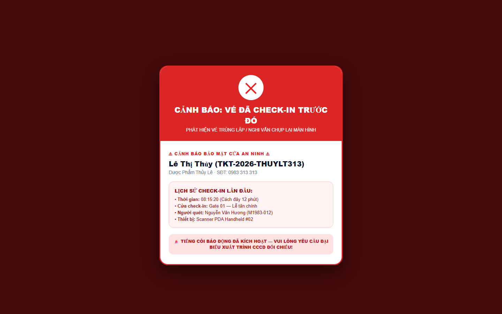
CHƯƠNG 12 · XÚC TIẾN THƯƠNG MẠI
Gian Hàng B2B Doanh Nhân CEO 1983 & Khớp Lệnh Cơ Hội Cung - Cầu
Thúc đẩy giao thương nội khối, giới thiệu sản phẩm và đàm phán hợp đồng B2B
Mục tiêu nghiệp vụ: Giúp các doanh nghiệp hội viên quảng bá sản phẩm với chính sách trợ giá nội bộ, tiếp nhận đơn hàng và khớp nối các cơ hội Cung - Cầu 1-on-1 có định giá thương vụ cụ thể.
Vị trí truy cập: Tab "Sản Phẩm" (`/association/products`) & Tab "Cơ Hội" (`/association/opportunities`)
1. Quy Trình Đăng Bán & Khớp Lệnh Giao Thương
- Đăng Sản Phẩm B2B: Nhấn nút "Đăng sản phẩm mới". Nhập tên hàng hóa, giá niêm yết, tỷ lệ chiết khấu đặc quyền cho CEO 1983 (ví dụ: giảm 20%), tải ảnh sản phẩm và gửi Ban Xúc Tiến thẩm định.
- Mua Hàng & Đàm Phán: Người mua xem chi tiết sản phẩm, nhấn nút "Nhắn tin đàm phán" để mở khung chat trực tiếp với CEO bán hàng.
- Đăng Nhu Cầu Cung - Cầu: Mở mục "Cơ Hội B2B", đăng nhu cầu cần mua vật tư hoặc tìm đối tác liên danh, nhập giá trị thương vụ ước tính (ví dụ: 500.000.000 VNĐ).
- Tiếp Nhận Cơ Hội: Doanh nghiệp có năng lực bấm "Tiếp nhận cơ hội" để khớp lệnh và nhận thông tin liên hệ bảo mật.
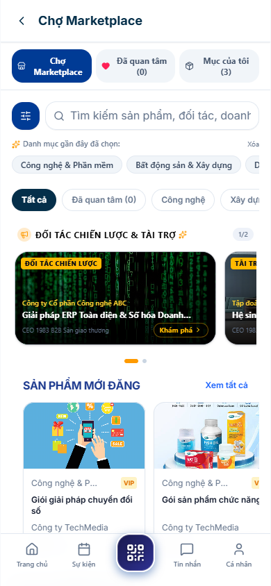
Hình 12.1: Gian hàng B2B Doanh nhân CEO 1983
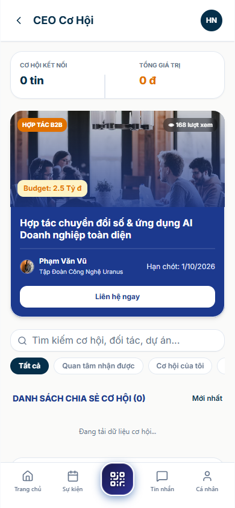
Hình 12.2: Bảng tin Cơ hội Cung - Cầu & Định giá thương vụ
CHƯƠNG 13 · TÀI CHÍNH & HỘI PHÍ
Quản Lý Hội Phí Thường Niên VietQR & Đối Soát Gạch Nợ Thủ Công
Quy trình nộp hội phí niên liễm và cơ chế đối soát sao kê minh bạch của Kế toán
Mục tiêu nghiệp vụ: Tạo điều kiện cho hội viên nộp hội phí nhanh chóng bằng mã VietQR ngân hàng, đồng thời hỗ trợ Kế toán đối soát sao kê và gạch nợ chuẩn xác trong CRM.
Vị trí truy cập: App Mobile (`/association/renew`) ➔ Web CRM Menu "Tài Chính" (`/fees`)
1. Quy Trình Đóng Phí & Gạch Nợ (5 Bước)
- Hội viên quét mã VietQR: Hội viên mở mục Đóng Hội Phí trên App Mobile, chọn kỳ đóng phí 5.000.000 VNĐ. Hệ thống hiển thị mã VietQR động chứa sẵn số tài khoản MB Bank và nội dung chuyển khoản.
- Thực hiện chuyển khoản: Hội viên dùng App Ngân hàng quét mã và xác nhận chuyển khoản.
- Kế toán kiểm tra sao kê: Ban Kế toán đăng nhập Web CRM, mở màn hình "Quản Lý Hội Phí" (`/fees`), đối chiếu số tiền và cú pháp chuyển khoản với sao kê ngân hàng MB Bank.
- Bấm nút Duyệt Gạch Nợ: Kế toán bấm "Duyệt Gạch Nợ". Hệ thống tự động gia hạn thêm +365 ngày sử dụng Thẻ VIP cho hội viên.
- Phát hành biên lai: Hệ thống chuyển trạng thái sang `paid` và gửi hóa đơn xác nhận đến hội viên.
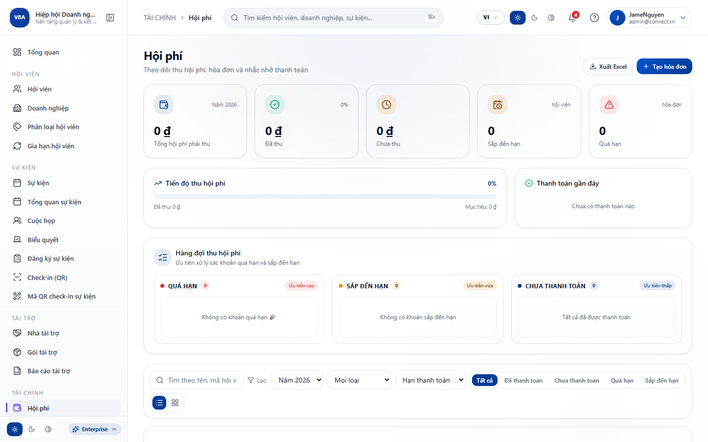
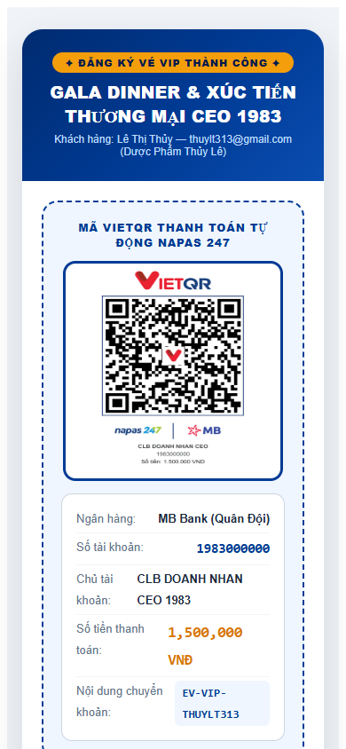
LƯU Ý NGHIỆP VỤ KẾ TOÁN: Hiện tại hệ thống sử dụng cơ chế tạo mã QR động kèm đối soát thủ công. Kế toán bắt buộc phải kiểm tra tiền về trên tài khoản ngân hàng thực tế trước khi bấm duyệt gạch nợ trên phần mềm.
CHƯƠNG 14 · BAN THƯ KÝ (BTK)
Điều Hành Cuộc Họp Ban Chấp Hành & Chống Trùng Phòng Sapphire Hub
Lên lịch họp ban chấp hành, tích hợp Zoom/Meet và thuật toán chống xung đột phòng
Mục tiêu nghiệp vụ: Giúp Ban Thư Ký quản lý lịch họp giao ban, triệu tập đại biểu, chống trùng lịch phòng họp vật lý Sapphire Hub và xử lý các cuộc họp đột xuất quan trọng.
Vị trí truy cập: Cổng Quản Trị CRM ➔ Menu "Cuộc Họp" (`/meetings`)
1. Quy Trình Khởi Tạo & Điều Phối Lịch Họp
- Bước 1: Bấm nút "Tạo Cuộc Họp Mới" trên CRM. Chọn hình thức: Phòng Họp Sapphire UniWork Hub (40 chỗ), Zoom Meetings, Google Meet hoặc UniWork Meet.
- Bước 2: Nhập ngày giờ bắt đầu, thời lượng và danh sách đại biểu triệu tập.
- Bước 3: Thuật toán tự động quét lịch: nếu phòng Sapphire Hub đã có cuộc họp khác trong khung giờ đó, hệ thống sẽ cảnh báo đỏ và chặn tạo lịch trùng.
- Bước 4: Đối với cuộc họp khẩn cấp, bật cờ `isUrgent`, sử dụng nút "Liên Hệ Điều Phối" để gọi điện hoặc gửi email ưu tiên thương lượng dời lịch cuộc họp thường.
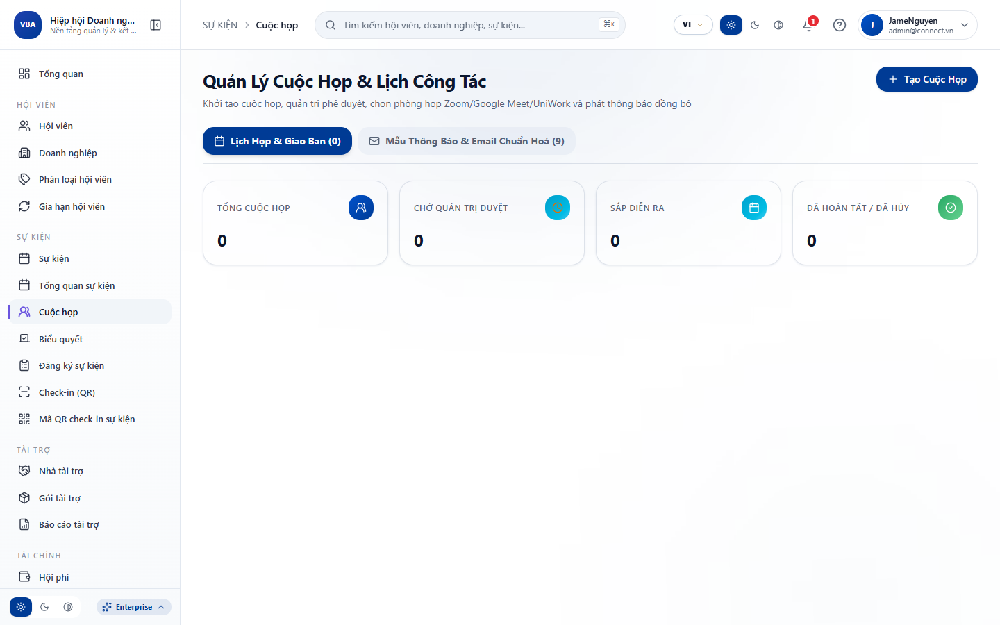
CHƯƠNG 15 · ĐIỀU HÀNH TÁC NGHIỆP
Quản Trị Công Việc Phân Cấp (Tasks 5 View Modes: Kanban Zoom, Org Tree)
Đóng gói công việc khoa học theo 5 chế độ hiển thị chuyên sâu
Mục tiêu nghiệp vụ: Giúp Ban Quản Trị và các Trưởng ban giao việc, kiểm soát tiến độ, đôn đốc công việc quá hạn và theo dõi hiệu suất hoàn thành của 6 Ban chuyên môn.
Vị trí truy cập: Cổng Quản Trị CRM ➔ Menu "Công Việc" (`/tasks`)
1. Khám Phá 5 Chế Độ Xem Công Việc
- Chế độ 1 - Bảng Chi Tiết (Table View): Xem đầy đủ cột thông tin: Tên công việc, Ban phụ trách, Người thực hiện, Deadline, Mức ưu tiên, Tiến độ % và Nút vào phòng họp.
- Chế độ 2 - Lưới Kanban Kéo Thả (Kanban Board): Kéo thả thẻ việc qua 5 cột trạng thái. Đặc biệt có thanh điều khiển Zoom Kích Thước 3 cấp độ: Thu nhỏ (280px), Tiêu chuẩn (345px), Phóng to (410px) chống tràn màn hình.
- Chế độ 3 - Lịch Công Tác (Calendar View): Xem khối lượng công việc và cuộc họp phân bổ theo từng ngày trong tháng.
- Chế độ 4 - Biểu Đồ Thống Kê (Statistics Chart View): Phân tích chuyên sâu với Recharts: Biểu đồ Donut cơ cấu trạng thái, Grouped Bar so sánh khối lượng giữa các ban và biểu đồ Gantt Timeline.
- Chế độ 5 - Cây Cơ Cấu Tổ Chức (Org Tree View): Cây phân cấp từ Ban Thường Trực xuống các Ban chuyên trách kèm tỷ lệ hoàn thành trung bình.
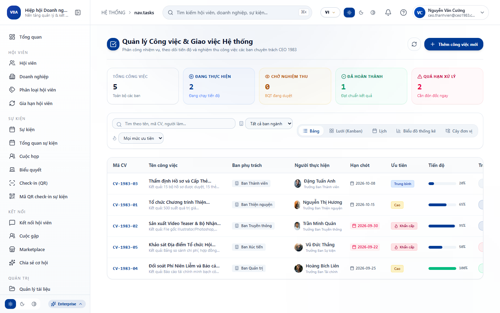
CHƯƠNG 16 · BẦU CỬ & HỆ THỐNG
Biểu Quyết Đại Hội Điện Tử, Thư Viện Tài Liệu & Ma Trận Phân Quyền RBAC
Nền tảng dân chủ đại hội, lưu trữ văn bản pháp lý và kiểm soát an toàn bảo mật
Mục tiêu nghiệp vụ: Tổ chức các phiên bỏ phiếu bầu cử đại hội trực tuyến minh bạch 1 người 1 phiếu, quản lý thư viện tài liệu nghị quyết và cấu hình phân quyền 5 cấp bậc cho đội ngũ điều hành.
Vị trí truy cập: CRM Menu "Biểu Quyết" (`/voting`), "Tài Liệu" (`/documents`) & "Phân Quyền" (`/permissions`)
1. Các Thao Tác Nghiệp Vụ Cốt Lõi
- Khởi tạo & Bỏ phiếu biểu quyết: Ban Thư Ký tạo cuộc biểu quyết trên CRM, thiết lập các phương án lựa chọn. Hội viên mở App Mobile (`/association/voting`) để bỏ phiếu bảo mật. Kết quả tỷ lệ % được cập nhật nhảy động thời gian thực trên màn hình lớn.
- Thư viện nghị quyết & Văn bản: Ban Thư Ký tải lên các văn bản quy chế, nghị quyết đại hội (PDF/DOCX) lên kho MinIO S3. Hội viên dễ dàng tra cứu trên App Mobile (`/association/library`).
- Ma trận phân quyền RBAC 5 Cấp Bậc: Ban Quản Trị cấu hình quyền hạn tại `/permissions`: kiểm soát quyền Xem, Sửa, Xóa, Phân quyền cho từng vị trí lãnh đạo trong 6 Ban chuyên môn.
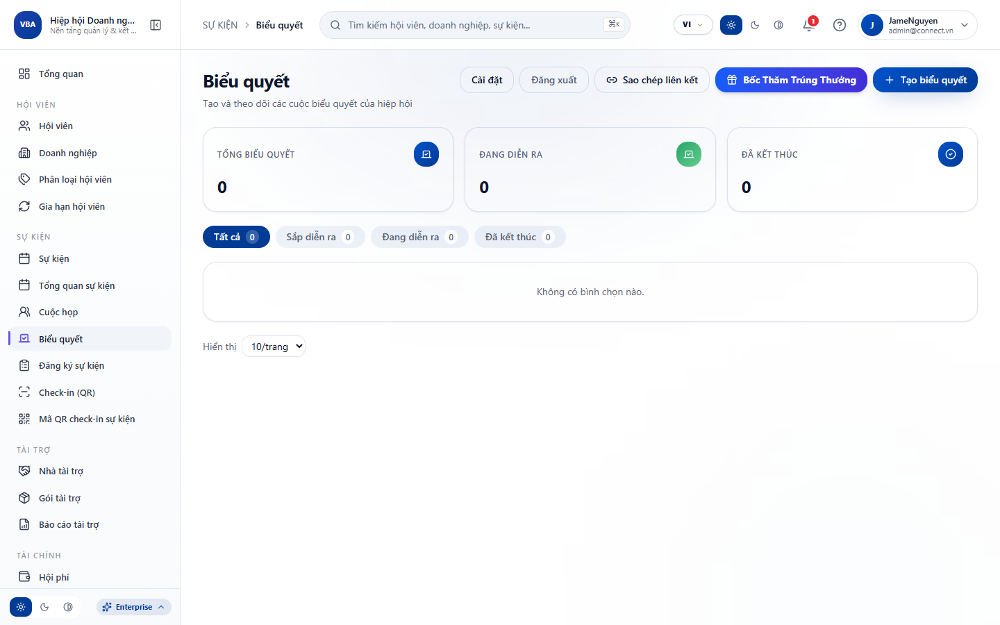
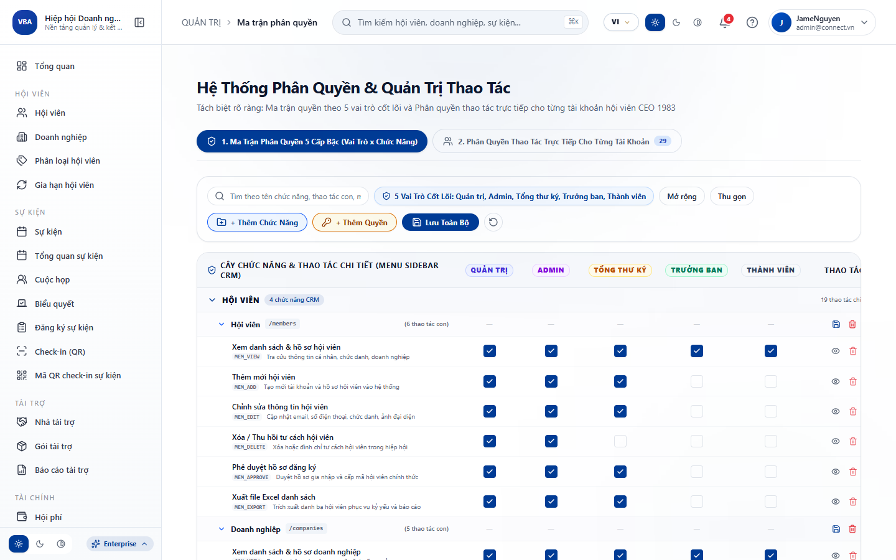
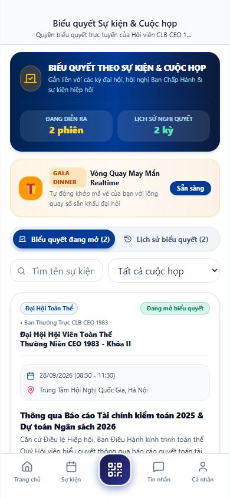
Hình 16.3: Giao diện biểu quyết đại hội điện tử trên App Mobile
TỔNG KẾT BÀN GIAO TÀI LIỆU HUẤN LUYỆN:
Tài liệu này được xuất bản theo tiêu chuẩn Playbook 18 & UNICOM System.
Bảo mật & Lưu hành nội bộ CLB Doanh Nhân CEO 1983 (HanoiBA).
Tài liệu này được xuất bản theo tiêu chuẩn Playbook 18 & UNICOM System.
Bảo mật & Lưu hành nội bộ CLB Doanh Nhân CEO 1983 (HanoiBA).
ĐẠI DIỆN HỘI ĐỒNG NGHIỆM THU
Ban Quản Trị CLB CEO 1983 & ViConnect Platform
Hà Nội, ngày 04 tháng 10 năm 2026
Ban Quản Trị CLB CEO 1983 & ViConnect Platform
Hà Nội, ngày 04 tháng 10 năm 2026